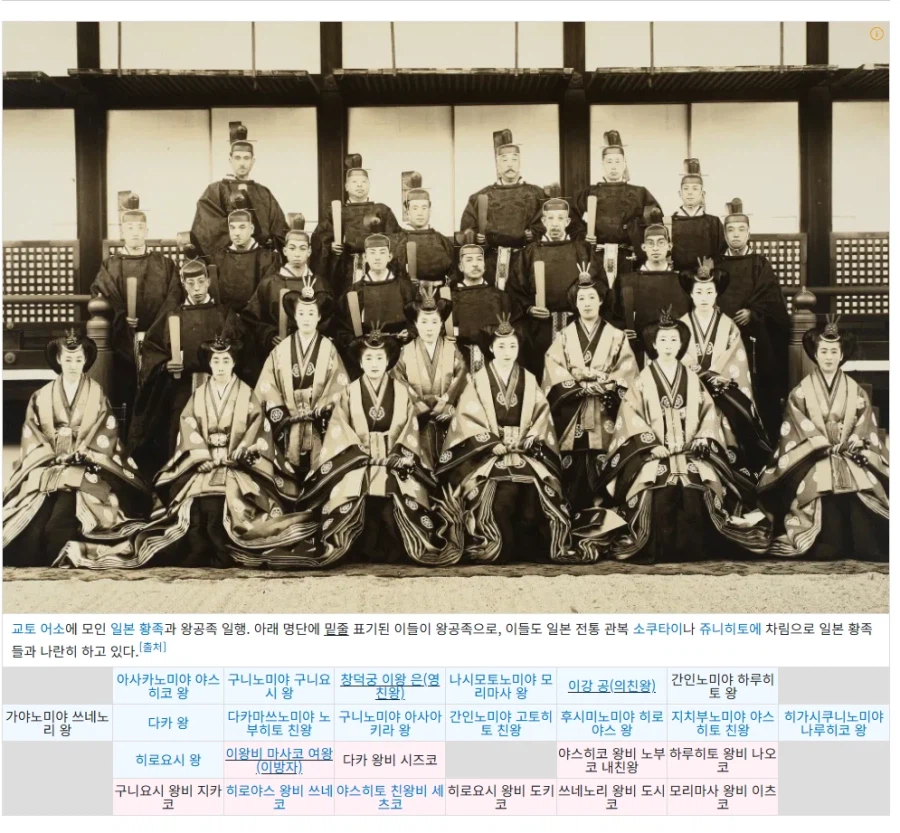

https://bbs.ruliweb.com/best/board/300143/read/76871502

조선왕족은 정치적인 실권은없었어도
일본으로부터 대우는 거의 준황족 정도라
오죽하면 도쿠가와 가문같은 한때 일본을 지배했던 쇼군가문도
조선왕족보다 한단계 아래였기때문
그예로 위사진처럼 일본황족과 함께하고 회의에도 참여하고...
당연히 이런모습이 조선사람들한테 좋게보일리 만무했고
재산조차 보전하지못하게됨
https://bbs.ruliweb.com/best/board/300143/read/76871502

조선왕족은 정치적인 실권은없었어도
일본으로부터 대우는 거의 준황족 정도라
오죽하면 도쿠가와 가문같은 한때 일본을 지배했던 쇼군가문도
조선왕족보다 한단계 아래였기때문
그예로 위사진처럼 일본황족과 함께하고 회의에도 참여하고...
당연히 이런모습이 조선사람들한테 좋게보일리 만무했고
재산조차 보전하지못하게됨
왕이 그저 왕이 아니라 왕으로서의 격을 유지해야되는데 살려줍쇼~만 한다면 그게 왜 왕이어야 함
고종 현손자들 어떻게 사는지랑 궁금해지네
지난번에 티비에 나왔는디 아직도 자기가 왕족인줄 알고 꺼드럭대다가 시민들한테 쿠사리 먹음
입헌군주제 형식으로 왕정복고 하려는 세력은 있었지않았나
어짜피 피규어 신세인데 뭐
우리 할머니한테서 구전으로 듣기로는
고조 할아버지 시절에 조선의 왕=고종황제였는데
이후 왕위를 물려받은 순종이나 영친왕 등등은 을사늑약으로 일제에 의해 세워진거라 사람들이 왕으로 인정하지 않았다고 함
그런 상황에서 본 글의 내용처럼 다른 왕족들은 꼴받게 여전히 호의호식하고 살았는데
그 와중에 고종황제 독살설 -> 3.1 운동 + 그나마 존경받던 의친왕마저 공화국 지지 이렇게 되면서
왕정복고에 관한 이야기는 거의 사라졌고
게다가 독립이 임시정부 독립운동가 + 미군정에 의해 일어나면서 왕족들은 한 것이 없다 이렇게 되고 아예 없어졌다고 카더라
입헌군주제 다룬 창작물들 재밌게봐서 문화상품으로 남아있으면 흥미로웠을거같긴한데
부패관리때문에 못참겠어서 들고 일어나니 백성 죽여달라고 외국에 청병하고
왜군에 왕궁이 점령되어 해방시키려고 결집하니 왜군이랑 손잡고 농민군을 학살해버리는데 누가 왕을 왕으로 볼까싶음
철종이 입궐한 것부터가 왕위계승 정통성 무너졌고
고종까지는 그나마 왕가의 입장에서 계승됐다고 쳐도
고종 다음으로는 일본왕가가 앉힌거라 깔끔하게 정통성 완전 날라간거임
왕가가 일제에 부역했던 안 했던 그것부터 해결 안 되는거니 무시당할만한 내력임
내 시체를 받아줄 조선인은 없는가!!
생각해봐, 500년 넘게 왕조를 유지했으면서 그 누구보다도 유교 윤리를 강조했던 집안이, 나라를 잘못 운영해서 망했으면 송나라 소제처럼 한탄하면서 자결하던지, 아니면 명나라 숭정제처럼 애뜻한 일화라도 남겼어야지. 고종은 어떻게든 자기집안의 영화만을 생각했고, 나라를 팔아서 이왕가로 격하되었음. 이왕가는 일본 귀족등급에서도 최고위급이었고 각종 특혜와 특권을 유지했고. 이건 결국 덴노의 일개 다이묘로 전락한 거랑 다름이 없음. 조선백성 입장에서는 사기맞은거지.
병신왕조
해방 안되고 일본이 승전했으면 저게 지금도 이어져 있겠네
일이라도 잘해서 인망이라도 있었으면 모를까
그 당시엔 걍 복고할 필요는 커녕 고려조차 안될만한 인식이였다는거네ㅋㅋㅋ
지금은 문화승리 달성 직전이라 신기할뿐
그 분이 저기에도 있는 의친왕이지 ㅋㅋㅋㅋㅋ